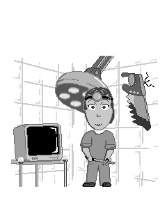
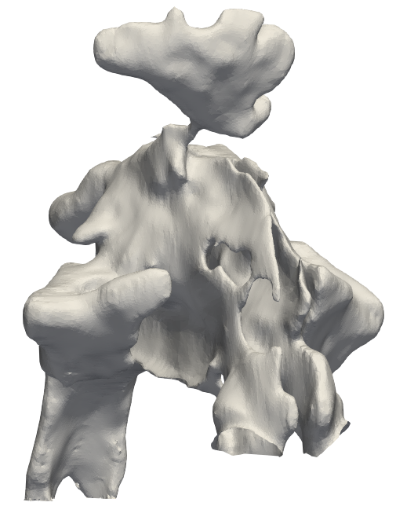
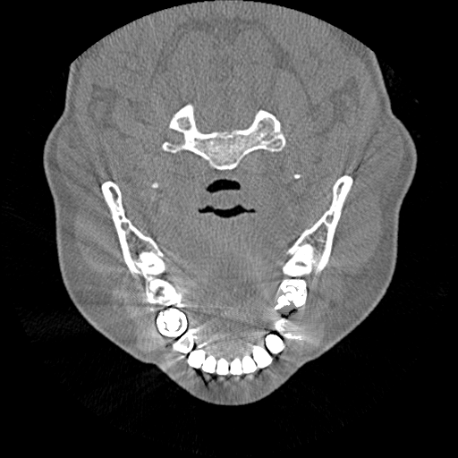
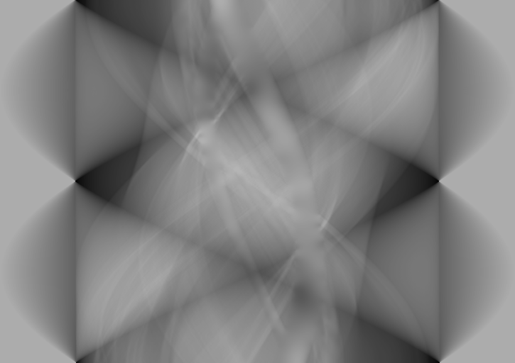

1
2
3
4
5
Part I: CV overview
J. L. Cercos-Pita <jlcercos@gmail.com>Who am I?
Skills
Physics
- J.L. Cercos-Pita, M. Antuono, A. Colagrossi, and A. Souto-Iglesias. SPH energy conservation for fluid–solid interactions. Computer Methods in Applied Mechanics and Engineering, 317:771–791, 2017
- I.R. Cal, J.L. Cercos-Pita, and D. Duque. The incompressibility assumption in computational simulations of nasal airflow. Computer methods in biomechanics and biomedical engineering, 20(8):853–868, 2017
- J.L. Cercos-Pita, R.A. Dalrymple, and A. Herault. Diffusive terms for the conservation of mass equation in SPH. Applied Mathematical Modelling, 40(19):8722 – 8736, 2016
Skills
Mathematics
- A. Souto-Iglesias, F. Macià, L.M. Gonzalez, and J.L. Cercos-Pita. Addendum to On the consistency of MPS [Comput. Phys. Comm. 184 (3) (2013) 732-745]. Computer Physics Communications, 185(2):595–598, 2014
- A. Souto-Iglesias, F. Macià, L.M. González, and J.L. Cercos-Pita. On the consistency of MPS. Computer Physics Communications, 184(3):732–745, 2013
- F Macià, L.M. Gonzalez, J.L. Cercos-Pita, and A. Souto-Iglesias. A boundary integral SPH formulation. Consistency and applications to ISPH and WCSPH. Progress of Theoretical Physics, 128(3):439–462, September 2012
Skills
Computer Sciences
- J.L. Cercos-Pita, I.R. Cal, D. Duque, and G.S. de Moreta. NASAL-Geom, a free upper respiratory tract 3D model reconstruction software. Computer Physics Communications, 223:55–68, 2018
- J.L. Cercos-Pita, G. Bulian, L. Pérez-Rojas, and A. Francescutto. Coupled simulation of nonlinear ship motions and a free surface tank. Ocean Engineering, 120:281–288, 2016
- J.L. Cercos-Pita. AQUAgpusph, a new free 3D SPH solver accelerated with OpenCL. Computer Physics Communications, 192(0):295–312, 2015
Skills
- Physics
- Mechanics
- Thermodynamics and Energy conservation
- Mathematics
- Integral transforms
- Convolutions
- Computer Sciences
- GPU acceleration
- Image processing
- Machine Learning
- Web development
NASAL-Flow
1.- Upload and wait
2.- Visualize the results
3.- Simulate an intervention
Part II: Scientific work
NASAL-Geom
 J.L. Cercos-Pita, I.R. Cal, D. Duque, and G.S. de Moreta. NASAL-Geom, a free upper respiratory tract 3D model reconstruction software. Computer Physics Communications, 223:55–68, 2018Metal Artifact Reduction (MAR)
Smooth

|
→ |
Smooth
Alternative A.- Median & Gaussian
Smooth
Alternative B.- Bilateral
Enhancement
Segmentation
Nostrils refinement
Surface generation
Results
Results
Metal Artifact Reduction
 J.L. Cercos-Pita, M.L. Rapún, J.A. Herrera-Alonso, L. Armendariz-Blanco. Towards physically correct inpaint masks for Metal Artifact Reduction Algorithms. European Journal of Radiology, Under revisisionMetal Artifact Reduction (MAR)
Metal Artifact Reduction (MAR)
1.- Metal footprint (mask)
| → |
Metal Artifact Reduction (MAR)
2.- Radon transform
| → |
Metal Artifact Reduction (MAR)
3.- Inpaint
| → |  |
Metal Artifact Reduction (MAR)
4.- Invert Radon transform
| → |